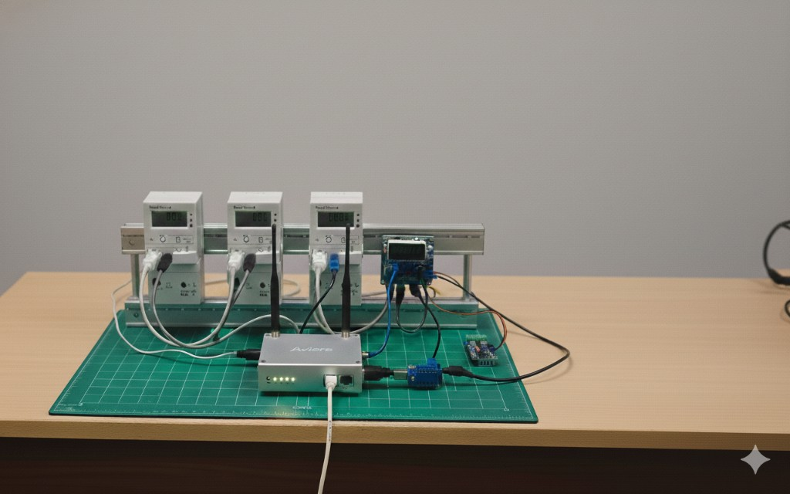
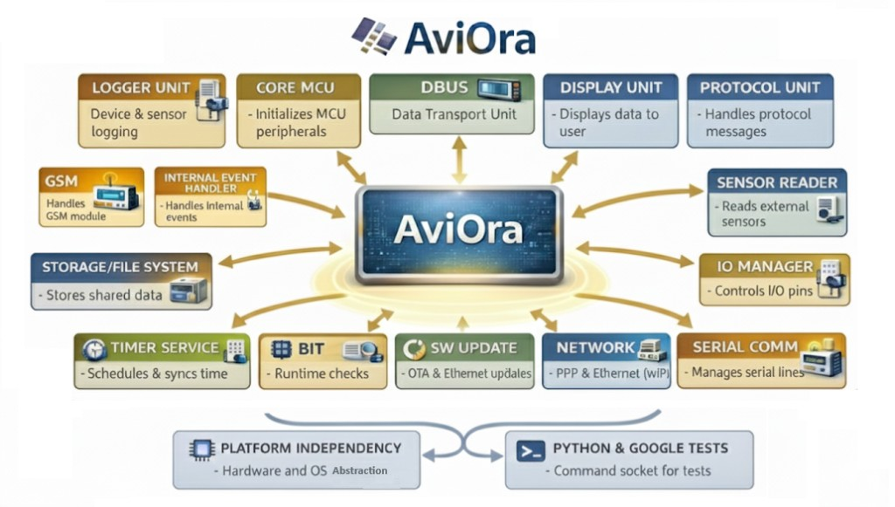
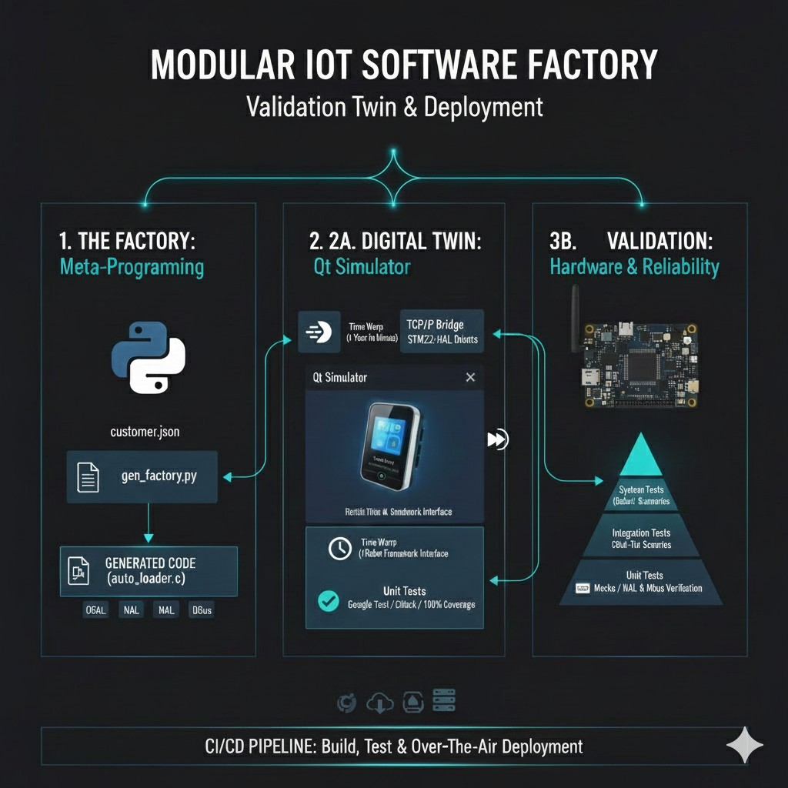

Hardware in Action
The silver Aviora hub connects to multiple utility meters for real-world data collection.

Aviora is an intelligent, flexible, and secure IoT data collection device. It gathers data from local devices—utility meters, industrial sensors, environmental monitors—and transmits it seamlessly to remote servers over GSM, Ethernet, Wi-Fi, or other methods.
The silver Aviora hub connects to multiple utility meters for real-world data collection.

Modular hub-and-spoke design: each unit connects to the central Aviora core.

Meta-programming, digital twin simulation, and CI/CD pipeline for reliable deployment.

Click a unit to explore its documentation and architecture.
Modular FS: FlashLink, FlashFS, littlefs. JSON config, auto-generated headers.
NTP, RTC backends. Time sync, epoch/calendar conversion.
GSM, Ethernet (PPP, lwIP). Multi-interface support.
LED/LCD displays. Customer-specific drivers via config.
OTA & Ethernet updates via FTP.
Smart city infrastructure • Energy and water tracking • Industrial monitoring • Agricultural sensing • Remote diagnostics